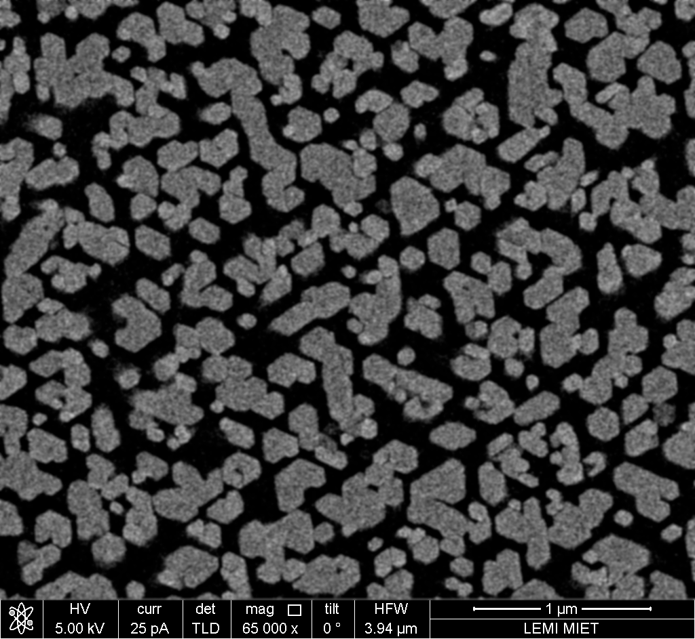

ИССЛЕДОВАНИЕ СМЫКАНИЯ НАНОПРОВОЛОК GaN ПОД ВОЗДЕЙСТВИЕМ ПУЧКА ЭЛЕКТРОНОВ
Соискатель: Алексей Дубров, группа ОФ-21 Научный руководитель: д.ф.-м.н., проф. Н.И. Боргардт Консультант: к.ф.-м.н. Р.Л. ВолковНанопроволока — одномерный наноматериал, длина которого значительно превосходит остальные измерения, которые, в свою очередь, не превышают нескольких десятков нанометров.
Актуальность
Количество публикаций по годамАктуальность
Область применения нанопроволок из GaN определяется их свойствами
- Большая площадь поверхности
- Отсутстие дислокаций в НП
- GaN — прямозонный полупроводник
Область применения НП
Сверхъяркие светодиоды, солнечные панели, батареи, транзисторы с окружающим затвором

Нобелевская премия
В 2014 году за создание синих светодиодов Исаму Акасаки, Хироси Амано и Сюдзи Накамуре присуждена Нобелевская премия по физике
Цель
Исследовать процесс смыкания нанопроволок из GaN под воздействием пучка электронов в РЭМПоставленные задачи
- Изучить литературу по данной теме
- Исследовать образцы нанопроволок в РЭМ
- Запечатлеть процесс смыкания нанопроволок
- Обработать полученные снимки и видеофайлы
- Интерпретировать полученные данные
Положения, выносимые на защиту
- Взаимодействие между нанопроволоками происходит только в момент нахождения электронного пучка над нанопроволокой
- Заряд, индуцированный электронным пучком, не накапливается в нанопроволоках, а стекает за характерное время менее 100 мкс
- Существующие модели взаимодействия нанопроволок из полупроводниковых материалов, учитывающие геометрические размеры нанопроволок и модуль упругости материала, из которого изготовлена нанопроволока, применимы для описания процесса взаимодействия на нанопроволок из нитрида галлия
Образцы
Нанопроволоки из GaN длиной 650, 985 и 2450 нм, выращенные на Si (111) без использования катализатора методом МПЭ. Подложки предварительно очищены 5% HF и отожжены в вакууме в течении 30 минут для удаления всевозможных загрязнений. На подложках был сформирован слой SiN для улучшния адгезии, после чего были выращены нанопроволоки. Образцы предоставлены институтом твердотельной электроники имени Пауля-Друде, Германия.
Образцы
Вид сверху и сбокуПроцесс смыкания нанопроволок
Модель смыкания НП
Модель смыкания нанопроволок и распределение потенциала в нанопроволокеМодель смыкания НП
\[\begin{aligned} W_{el} &= \frac{\rho^2 I_E^2 L^3 \epsilon_0}{2 h^3 \pi r^4} \int_{0}^{h}\frac{y^2}{\ln \left( \frac{d}{r} - \frac{2 \delta}{h r} y\right)} dy,\\ F_{el} &=\frac{\partial W_{el} }{\partial \delta},\\ W_{b} &= \int_{0}^{L} \frac{M^2}{2 E I} dy = \frac{3\pi}{4}\frac{Er^4}{L^3}\delta^2,\\ F_{b} &= \frac{\partial W_{b} }{\partial \delta} = \frac{3\pi}{2}\frac{Er^4}{L^3}\delta. \end{aligned} \]
$I_E$ — ток пучка, $M$ — скручивающий момент, $E$ — модуль Юнга, $I = \frac{\pi r^4 }{4}$ — момент инерции круглой балки радиуса $r$
Модель смыкания НП
Максимальное смещение $\delta_{MAX}$ достигается при $F_{el} = F_{b}$, при этом
- Если $\delta_{MAX} = \frac{d}{2}$, НП смыкаются и остаются соедененными под действем силы Ван-дер-Ваальса
- $\delta_{MAX} < \frac{d}{2}$ НП сближаются на расстояние $\delta_{MAX}$ и расходятся
Схема проведения экспериментов
- Контрольный снимок, ток пучка 25-100 пА, время остановки 300 нс
- Интенсивное воздействие на образец, ток до 1,6 нА, время остановки до 60 с
- Итоговый снимок, ток пучка 25-100 пА, время остановки 300 нс
Фильтр Гаусса
Исходное изображение сварачивается с матрицей, элементы которой рассчитываются по формуле: \[g(x,y)={\frac {1}{2\pi \sigma ^{2}}}\cdot e^{{-{\frac {x^{2}+y^{2}}{2\sigma ^{2}}}}},\] где x, y — расстояние от центра, $\sigma$ — радиус размытия
Обработка изображений
Параметр $\sigma$ = 5 px
 Фильтр ГауссаМетод водоразделов
Обработка изображений
Сегметация методом водоразделовДоля соединившихся НП, %
\[F_{el} \sim \frac{1}{r^2}\]
Расстояние, нмДоля соединившихся НП, %
\[F_{b} \sim \frac{1}{S^2}\]
Площадь НП, нм 2
Доля соединившихся НП, %
Расстояние от центра, мкмВремя стекания заряда $t < 100 \text{ мкс}$
Выводы
- При помощи РЭМ исследованы образцы НП из GaN
- Cнимки были обработаны при помощи методов математической фильтрации цифровых изображений
- Получены гистограммы зависимости доли соединившихся НП от длины и площади сечения НП
- Произведена оценка применимости моделей взаимодействия нанопроволок, описанных в литературе к использованным в исследовании образцам НП из нитрида галлия